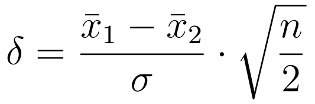
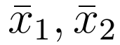
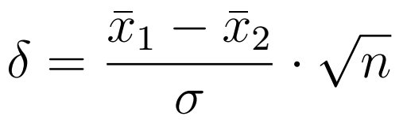
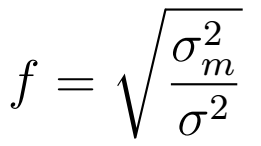
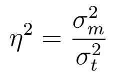
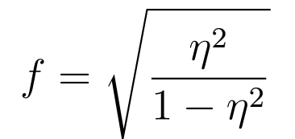
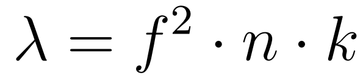

Das Hauptziel ist Versuchsplanungen zu unterstützen und zu erleichtern. Die App kann in diesem Zusammenhang helfen den benötigten Stichprobenumfang für ein Projekt zu ermitteln. Ausgegangen wird dabei von Parametern, die in Vorversuchen abgeschätzt wurden, sowie dem gewünschten Signifikanzniveau und der statistischen Power, die erreicht werden soll. Es werden der t-Test und die Analysis of Variance (ANOVA) unterstützt. Außerdem kann die App dazu benutzt werden im Nachhinein (post-hoc) die erzielte Power zu berechnen.
Im Rahmen der 'klassischen' Teststatistik ist es das Ziel eine wissenschaftliche Hypothese zu wiederlegen, um ihr Gegenteil zu beweisen. In der Regel ist das Ziel Unterschiede nachzuweisen. In der Alternativhypothese (HA) wird der Unterschied formuliert, der nachgewiesen werden soll. Die Nullhypothese (H0) wird als Gegenteil der Alternativhypothese formuliert. Um die Alternativhypothese anzunehmen, wird versucht die Nullhypothese auf Basis statistischer Tests wie dem t-Test oder der ANOVA abzulehnen. Beim statistischen Testen können vier verschiedene Ergebnisse eintreten, die in der Tabelle unten aufgeführt sind.
| H0 abgelehnt HA angenommen Unterschied nachgewiesen |
H0 nicht abgelehnt HA nicht angenommen Kein Unterschied nachgewiesen |
|
|---|---|---|
| HA wahr H0 falsch Unterschied vorhanden |
richtige Annahme von HA Power/Teststärke Wahrscheinlichkeit 1-β |
falsche Nicht-Annahme von HA β-Fehler/Fehler 2. Art Wahrscheinlichkeit β |
| HA falsch H0 wahr Kein Unterschied vorhanden |
falsche Annahme von HA α-Fehler/Fehler 1. Art Wahrscheinlichkeit α |
richtige Nicht-Annahme von HA Sicherheitswahrscheinlichkeit Wahrscheinlichkeit 1-α |
Der 'Berechnen'-Button löst die Berechnung des benötigten Stichprobenumfangs bzw. der erzielten Power aus. Gleichzeitig wird das Ergebnis graphisch dargestellt. Wann immer Parameter geändert werden, werden diese erst berücksichtigt, wenn das nächste Mal auf 'Berechnen' geklickt wird.
In der rechten Hälfte der App werden die Ergebnisse unter entsprechender Überschrift angezeigt.
Da der Stichprobenumfang immer auf ganze Zahlen aufgerundet wird, ergeben sich leichte Änderungen bezüglich der Power, die erreicht werden kann. Diese aktualisierte Power ist ebenfallls angegeben und ist in der Regel minimal größer als die angegebene Power.
Unterhalb der Text-Ausgaben wird die Analyse zusätzlich grafisch
dargesellt. Es werden die zentrale und die nicht-zentrale Verteilung
(entsprechend der Test-Auswahl) mit ihrem Überlapp aufgetragen. Dabei entspricht
die zentrale Verteilung der Nullhypothese (H0) des statistischen Tests,
die besagt, dass es keinen Unterschied zwischen den Mittelwerten der Gruppen bzw.
dem Mittelwert und dem zu testenden Mittelwert gibt. Die zentrale Verteilung
besitzt ihr Maxiumum immer bei x = 0. Die nicht-zentrale Verteilung entspricht
der Alternativhypothese (HA). Die Form und Lage der nicht-zentralen
Verteilung werden durch den Nichtzentralitätsparameter bestimmt. Letzterer ist
im Fall des t-Tests von der Art des Testdesigns, dem ermittelten
Stichprobenumfang, der Standardabweichung und dem Mittelwertsunterschied
abhängig. Im Fall der ANOVA ist der Nichtzentralitätsparameter von dem
ermittelten Stichprobenumfang und der Effektstärke abhängig. Details sind in den
Hinweisen zur Implementierung zu finden.
In der Abbildung wird zudem der kritische Wert eingezeichnet, ab dem Werte als
signifikant verschieden betrachtet werden (die Nullhypothese wird abgelehnt und
die Alternativhypothese angenommen). Der Bereich der zentralen Verteilung mit
x-Werten größer als dem kritischen Wert entspricht dem α-Fehler (also einer
falschen Ablehung der Nullhypothese). Bei ungerichteten Hypothesen teilt sich
der α-Fehler symmetrisch auf beide Enden der Verteilung auf, sodass an
beiden Enden ein Bereich von α/2 existiert. Bei gerichteten Hypothesen
befindet sich der Bereich des α-Fehlers nur an einem Ende der Verteilung.
Der Bereich der nicht-zentralen Verteilung mit x-Werten kleiner als dem
kritischen Wert entspricht dem β-Fehler (also einer falschen
Nicht-Ablehung der Nullhypothese). Die Veranschaulichung des α- und
β-Fehlers soll dabei helfen, die zu erwartenden Wahrscheinlichkeiten für
die möglichen Fehler bei der Durchführung von statistischen Tests
einzuschätzen.
Zur Berechnung der Stichprobenumfänge bei einem t-Test wird die R-Funktion
power.t.test aus dem Standard-Paket stats genutzt. Diese
Funktion kann für alle t-Tests angewendet werden. Neben der Art des t-Tests
(gerichtet/ungerichtet, eine/zwei Stichprobe/n) benötigt die Funktion den
Mittelwertsabstand, die Standardabweichung, das Signifikanzniveau und die Power.
Der benötigte Stichprobenumfang wird der Rückgabe entnommen und auf eine
ganze Zahl gerundet.
Die Funktion power.t.test kann nicht nur Stichprobenumfänge
berechnen, sondern kann abgesehen von der Art des t-Tests jeden der
Eingabeparameter berechnen, wenn alle anderen Parameter gegeben sind. Zur
Berechnung der neuen Power, die sich nach dem Runden des berechneten
Stichprobenumfangs auf eine ganze Zahl ergibt, wird also erneut
power.t.test aufgerufen. Dieses mal wird allerdings der gerundete
Stichprobenumfang angegeben und die Angabe der Power freigelassen.
Auf die gleiche Weise wird auch die post-hoc Power-Berechnung vorgenommen.
| [1] |  |
|
: Mittelwerte der
Stichproben, |
|
| [2] |  |
Zur Berechnung der Stichprobenumfänge für eine ANOVA wird die Funktion
pwr.anova.test aus dem Paket pwr genutzt. Diese Funktion
ist in ihrer Funktionsweise sehr ähnlich zu der entsprechenden Funktion für den
t-Test (siehe oben). Im R-Standardpaket stats gibt es zudem die Funktion
power.anova.test, auf der pwr.anova.test aufgebaut
ist. Die beiden Funktionen unterscheiden sich allerdings minimal in ihren
Eingabeargumenten und der Berechnung des Stichprobenumfangs. Die Anzahl der
Gruppen (power.anova.test-Funktion
intern mit einem Faktor (pwr.anova.test-Funktion ein Faktor von
pwr.anova.test genutzt.
Der errechente Stichprobenumfang pro Gruppe
wird auf ganze Zahlen gerundet und dann mit der Anzahl der Gruppen multipliziert,
um den Gesamtumfang zu erhalten.
Zur Ermittlung der Stichprobenumfänge wird als Eingabeparameter eine Abschätzung
der Effektstärke benötigt. Die beiden für die ANOVA am häufigsten benutzten Maße
| [3, 4] |  |  | (Cohen, 1988, S. 281) |
|
|
|||
pwr.anova.test-
Funktion mit dem Maß | [5] |  | (Cohen, 1988, S. 284) |
Durch eine Beschränkung der Funktion pwr.anova.test kann es bei
zu großen Effektstärken zu einer Fehlermeldung kommen. Der genaue Wert hängt
auch von den anderen Eingaben ab, so kann bei den Beispielwerten nur mit
Effektstärken von
Die aktualisierte Power auf Basis der gerundeten Stichprobenumfänge wird hier
analog zum t-Test berechnet.
Die post-hoc Power-Berechnung wird ebenfalls mit der Funktion
pwr.anova.test durchgeführt.
Die zentrale F-Verteilung hat einen Nichtzentralitätsparameter von
| [6] |  | (vereinfacht aus Cohen, 1988, S. 550) |
|
|
||
df(x,dfs,dfu,lambda) bestimmt, wobei dfs für die Freiheitsgrade der
systematischen Varianz (Anzahl der Gruppen - 1) steht und dfu für die
Freiheitsgrade der unsystematische Varianz (Gesamtstichprobenumfang - Anzahl der
Gruppen). Lambda ist der Nichtzentralitätsparameter.
qf(1-alpha,dfs,dfu) genutzt.
Cohen, J. (1988). Statistical Power Analysis for the Behavioral Sciences.